Аннотации типов и документация кода · МДК.01.01 · разработка программных модулей
Глава 4.15
Темы оформления
и публикация на Pages
В этой главе сайт «Отчёта кафе» получает тему оформления Furo и выходит в интернет. Порядок такой: сравнение трёх тем, установка Furo, список зависимостей документации, файл сборки для GitHub Actions, проверка строгой сборкой и публикация на GitHub Pages. Шаги на своём компьютере показаны кадрами VS Code; шаги на сайте GitHub описаны с точными названиями пунктов.
- Категория
- Пошаговая работа
- Время
- Около 50 минут
- Инструменты
- Furo, GitHub Actions, GitHub Pages
- Результат
- Сайт по адресу
…github.io/…
После главы 4.14 на сайте весь пакет app и страница о запуске, сборка проходит без предупреждений. Остаются две вещи: сайт в простой встроенной теме и открывается только с вашего диска. В этой главе он получает тему Furo и публикуется на GitHub Pages.
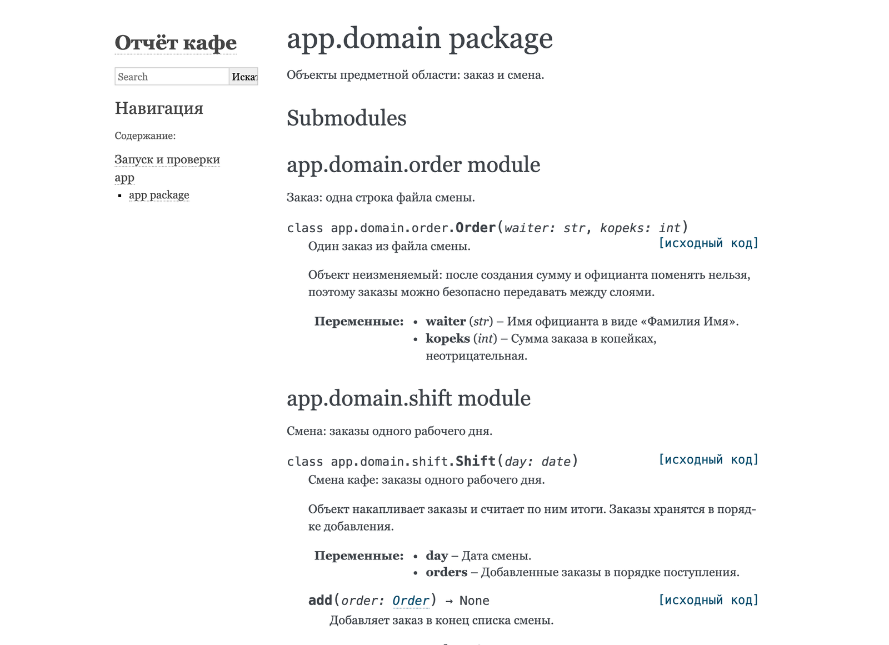
alabaster, адрес начинается с file://.Все команды главы выполняются в терминале, где окружение активировано, — в начале приглашения стоит (.venv), как после шага «Активируйте окружение» в главе 4.12, §3. Новый терминал VS Code открывается без активации: в нём сначала выполните source .venv/bin/activate.venv\Scripts\Activate.ps1 в PowerShell.
§1Тема оформления
Тема оформления Sphinx — набор шаблонов, стилей и скриптов страниц. Содержимое — заголовки, описания функций, оглавление — Sphinx строит одинаково, тема задаёт только, как его показать: шрифты, цвета, где навигация. Поэтому тему меняют одной строкой в conf.py, а файлы .rst и докстринги не трогают. Так у одной книги бывают разные издания: текст тот же, меняются шрифт и обложка.
Одна и та же страница пакета app.services в трёх распространённых темах:
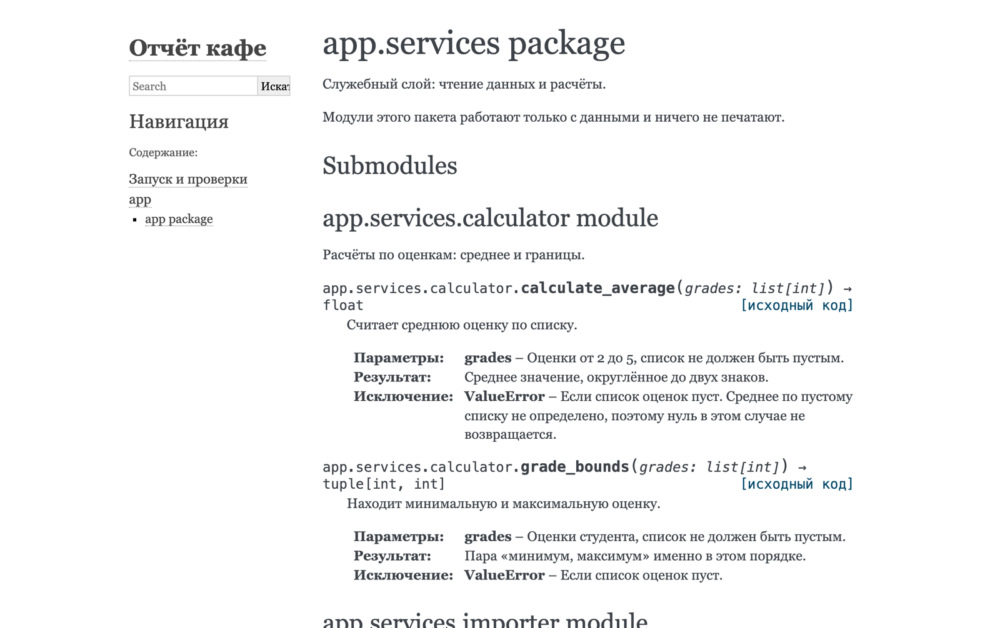
alabaster — встроена в Sphinx, стоит после мастера. Узкая колонка слева показывает только верхний уровень оглавления.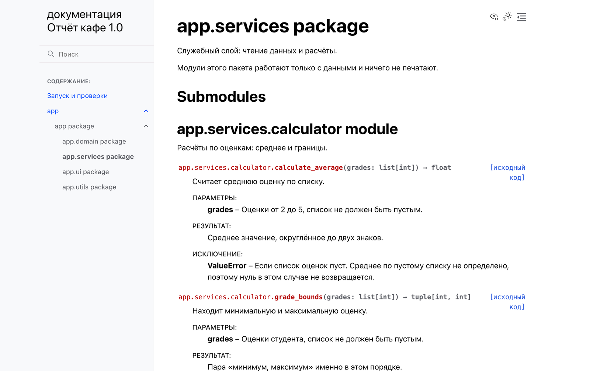
furo — ставится через pip install furo. Слева всё дерево страниц, текущая выделена; имена функций выделены цветом; значки справа сверху переключают светлую и тёмную схему. На ней собраны, например, документации pip и Black.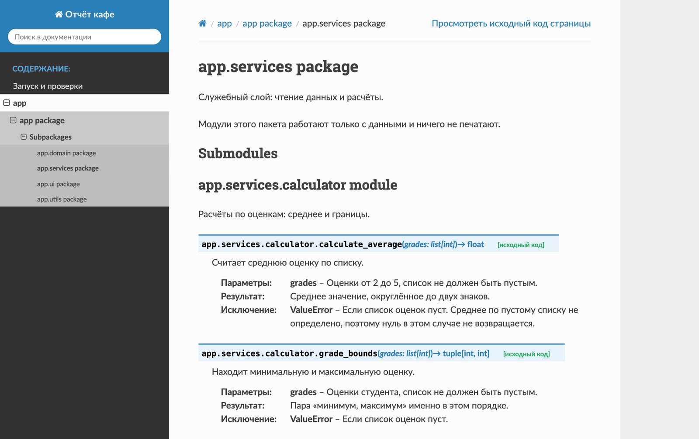
sphinx_rtd_theme — ставится через pip install sphinx-rtd-theme. Тёмная колонка с деревом и путь к странице сверху.В курсе выбрана Furo: дерево всех пакетов видно с любой страницы, а сайт читается с телефона без горизонтальной прокрутки.
§2Тема Furo по шагам
Тема — пакет Python, поэтому её сначала ставят в окружение, а потом указывают в conf.py. Четыре шага.
Установите Furo
pip install furo
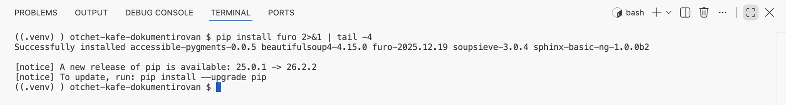
Successfully installed и в списке furo-2025.12.19.Укажите тему и заголовок сайта
В конце conf.py замените 'alabaster' на 'furo' и добавьте строку html_title.
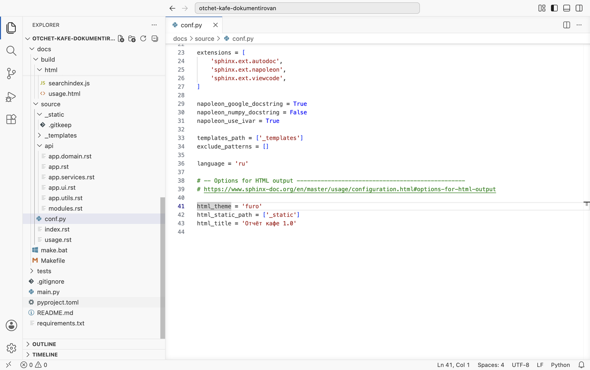
41 — тема furo, строка 43 — заголовок сайта. Без html_title Furo составляет заголовок из названия и номера выпуска: «документация Отчёт кафе 1.0»; своя строка короче.Соберите
Сборка без -q, с -E: sphinx-build -M html docs/source docs/build -E.
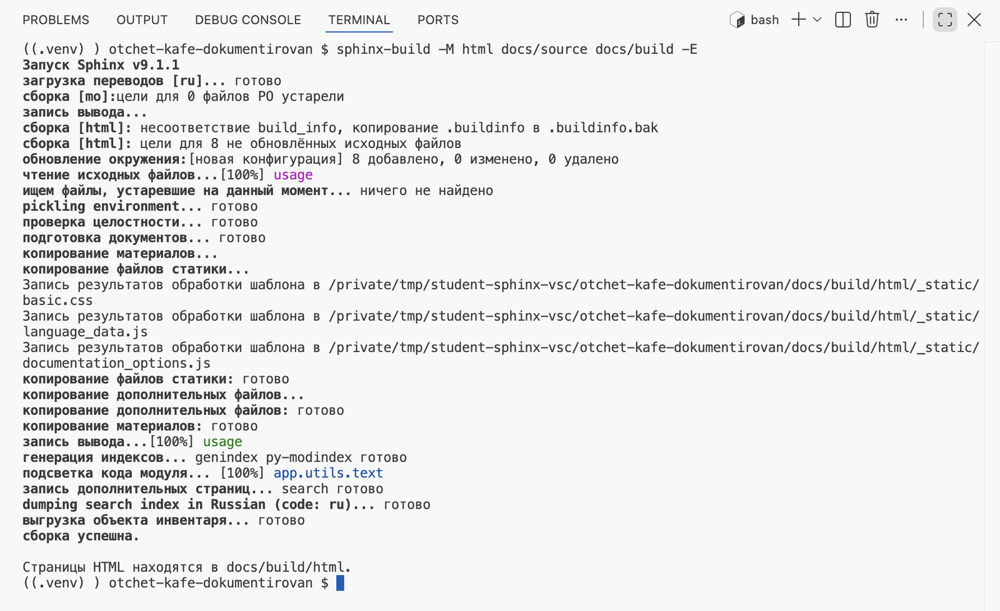
несоответствие build_info — изменились настройки, поэтому пересобраны все 8 страниц: главная, «Запуск и проверки» и шесть страниц api. Строки подсветка кода модуля — работа viewcode. Итог — сборка успешна.Откройте главную страницу
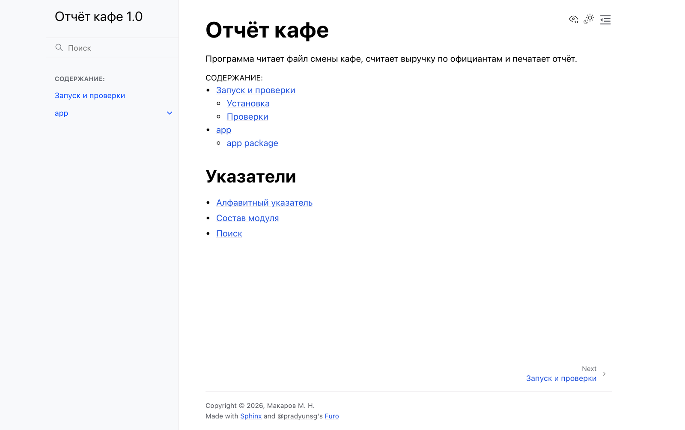
html_title, под ним поиск и «Содержание». Внизу справа — ссылка Next на следующую страницу. Подписи навигации Furo не переведены: Next и Copyright остаются английскими при language = 'ru'.§3Зависимости документации
Программе «Отчёт кафе» Sphinx и Furo для работы не нужны, поэтому в requirements.txt проекта их не пишут. Для документации заводят свой список, рядом с её исходниками. Он понадобится машине GitHub Actions: она соберёт сайт на тех же версиях, что у вас. Два шага.
Узнайте установленные версии
pip show sphinx furo — на кадре вывод сокращён до строк Name и Version.
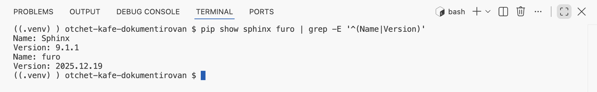
Sphinx 9.1.1 и furo 2025.12.19.Создайте docs/requirements.txt
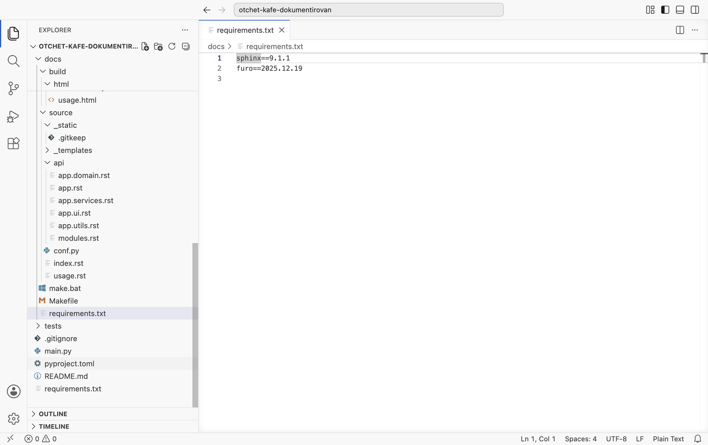
==, как в requirements.txt проекта. Файл лежит в docs, рядом с Makefile.На новом компьютере для сборки документации ставят оба списка: pip install -r requirements.txt -r docs/requirements.txt. Первый нужен, потому что autodoc импортирует модули проекта, второй — сам Sphinx с темой.
Сайт собран в теме Furo, зависимости документации записаны в docs/requirements.txt. Пока сайт открывается только с вашего диска.
§4GitHub Pages и GitHub Actions
GitHub Pages — служба GitHub, которая раздаёт готовые HTML-страницы по адресу вида https://логин.github.io/имя-репозитория/. Сайт Sphinx как раз состоит из таких страниц. В бесплатном плане Pages включаются у публичного репозитория.
Готовых страниц в репозитории нет: docs/build исключена из Git в главе 4.12. Их собирает GitHub Actions — служба, которая по событию в репозитории запускает команды на своей виртуальной машине. Событие — отправка коммита в main, команды — те же, что вы выполняли в терминале.
Путь от коммита до сайта
main.
ваш компьютер
sphinx-build.
GitHub Actions
docs/build/html передаётся в Pages.
GitHub Actions
Если на шаге 2 сборка находит предупреждение, шаги 3 и 4 не выполняются: на сайте остаётся прошлая исправная версия.
§5Файл сборки docs.yml
Что запускать, GitHub Actions читает из файлов в папке .github/workflows. Такой файл называется workflow и пишется в формате YAML: отступы задают вложенность, как в Python, дефис начинает элемент списка. Два шага.
Создайте .github/workflows/docs.yml
В корне проекта создайте папку .github (точка в начале обязательна), в ней — workflows, в ней — файл docs.yml. Текст файла:
name: Документация on: push: branches: [main] workflow_dispatch: permissions: contents: read pages: write id-token: write concurrency: group: pages cancel-in-progress: true jobs: build: runs-on: ubuntu-latest steps: - uses: actions/checkout@v5 - uses: actions/setup-python@v6 with: python-version: "3.12" - run: pip install -r requirements.txt -r docs/requirements.txt - run: sphinx-build -M html docs/source docs/build -W --keep-going - uses: actions/upload-pages-artifact@v4 with: path: docs/build/html deploy: needs: build runs-on: ubuntu-latest environment: name: github-pages url: ${{ steps.deployment.outputs.page_url }} steps: - id: deployment uses: actions/deploy-pages@v4
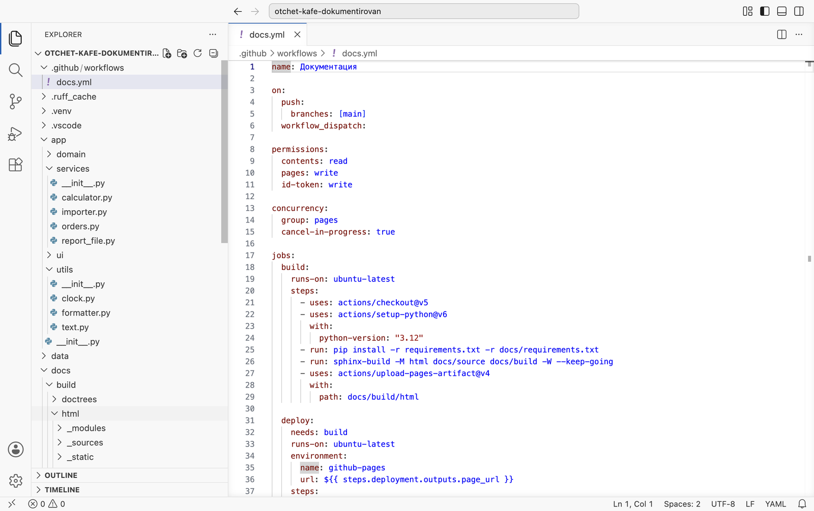
.github → workflows → docs.yml.Прочитайте файл по блокам
name— название на вкладке Actions репозитория.on— когда запускать: при отправке в веткуmain;workflow_dispatchдобавляет кнопку Run workflow для ручного запуска.permissions— права на время запуска: читать код, публиковать в Pages, подтвердить GitHub, что публикация идёт из этого репозитория.concurrency— если отправлены два коммита подряд, первый запуск отменяется.jobs: build— задание сборки на машине с Linux. Шаги:actions/checkoutскачивает код,actions/setup-pythonставит Python 3.12, две строкиrun— те же команды, что у вас в терминале,actions/upload-pages-artifactупаковываетdocs/build/html.jobs: deploy— задание публикации.needs: build— начинается, только если сборка прошла.actions/deploy-pagesвыкладывает упакованную папку, адрес сайта появляется на странице запуска.
Строка uses: подключает готовое действие из репозитория GitHub, после @ — основная версия действия. Строка run: — команда в терминале машины. Окружение .venv там не создаётся: машина запускается заново для каждого запуска, и пакеты ставятся прямо в её Python. Поэтому команды записаны так же, как у вас в терминале после активации.
§6Публикация по шагам
Проект должен лежать в своём репозитории на GitHub; как создать репозиторий и отправить в него проект, разобрано в справочнике по Git и GitHub. Шесть шагов: проверка у себя, настройка Pages, коммит, запуск, сайт, обновление.
Проверьте строгую сборку у себя
Та же команда, что в workflow: sphinx-build -M html docs/source docs/build -E -W --keep-going.
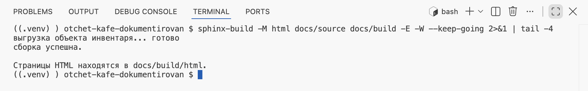
сборка успешна. Предупреждение, пропущенное здесь, на машине Actions остановит публикацию. Проверьте и файл docs/source/_static/.gitkeep из главы 4.12: без него сборка на машине Actions остановится на _static.Выберите GitHub Actions источником Pages
На странице репозитория: вкладка Settings → в левой колонке Pages → блок Build and deployment → список Source → GitHub Actions. Выбор сохраняется сразу.
Второй вариант в списке — Deploy from a branch — публикует файлы, лежащие в ветке. Готовых страниц в ветке нет, поэтому в курсе выбирают GitHub Actions.
Отправьте коммит
Закоммитьте docs (папка build в коммит не попадёт — она в .gitignore) и .github/workflows/docs.yml. Отправьте в main: кнопка Sync Changes в панели Source Control или git push.
Найдите запуск на вкладке Actions
Вкладка Actions: слева — workflow «Документация», справа — запуск с текстом вашего коммита. Жёлтый кружок — идёт, зелёная галочка — прошёл, красный крестик — ошибка. Внутри запуска — два прямоугольника, build и deploy, соединённые стрелкой. Щелчок по прямоугольнику показывает вывод каждого шага, как в терминале.
Откройте сайт
После зелёной галочки адрес появляется под deploy и в Settings → Pages строкой Your site is live at. Это https://логин.github.io/имя-репозитория/. На сайте всё то же, что на вашем диске после строгой сборки.
Обновите сайт правкой
Исправьте любой докстринг, закоммитьте и отправьте. На вкладке Actions появится новый запуск, через минуту-две сайт по тому же адресу покажет правку. Собирать сайт у себя перед этим не обязательно, но строгая сборка на своём компьютере быстрее показывает ошибку.
§7Если публикация не прошла
Откройте запуск с красным крестиком, затем задание и шаг с крестиком: вывод там тот же, что в терминале.
| Что в выводе | Причина | Что сделать |
|---|---|---|
элемент html_static_path '_static' не существует | Пустой _static нет в репозитории | Положить в неё .gitkeep |
Could not open requirements file … docs/requirements.txt | Файл не попал в коммит | Проверить путь и коммит |
failed to import … No module named 'app' | Нет строки sys.path в conf.py или проект не в корне репозитория | Глава 4.13, §4; для подпапки — глава 4.16 |
Любой WARNING | Ключ -W делает его ошибкой | Повторить строгую сборку у себя, исправить |
В deploy: Failed to create deployment (status: 404) | Источник Pages не GitHub Actions | Шаг 2 из §6, затем Re-run jobs |
Весь путь от пустой папки до опубликованного сайта пройден по частям. В главе 4.16 он проходится целиком: на паре — на новой копии проекта, дома — на своём проекте Student Tools.
§8Проверьте себя
Что меняется при смене темы?
Шаблоны, стили и расположение навигации. Текст страниц и описания функций остаются прежними.
Зачем отдельный docs/requirements.txt?
Программе Sphinx и Furo не нужны. Список ставят там, где собирают документацию: у себя и на машине GitHub Actions.
Почему источник Pages — GitHub Actions?
Готовых страниц в репозитории нет: их собирает машина Actions и передаёт в Pages напрямую.
Что будет с сайтом, если коммит сломал сборку?
build завершится ошибкой, deploy не начнётся, на сайте останется последняя исправная версия.
pip install furo
html_theme = 'furo'
docs/requirements.txt
sphinx==9.1.1 · furo==2025.12.19
.github/workflows/docs.yml
build → deploy
Settings → Pages → Source
GitHub Actions
-E -W --keep-going
_static/.gitkeep
https://логин.github.io/репозиторий/
Итог главы
Тема оформления меняет вид страниц одной строкой html_theme; в курсе — Furo с заголовком html_title. Sphinx и тему записывают в docs/requirements.txt с точными версиями. Публикует сайт GitHub Pages, собирает — GitHub Actions по файлу .github/workflows/docs.yml: задание build выполняет строгую сборку, задание deploy выкладывает docs/build/html. Источник Pages в настройках — GitHub Actions. Сайт обновляется после каждой отправки в main, сломанная сборка оставляет прежнюю версию. В главе 4.16 весь путь проходится заново, от пустой папки до опубликованного сайта.
- Настройки
html_themeиhtml_title— Sphinx, Configuration. - Тема Furo — документация Furo; тема Read the Docs — sphinx-rtd-theme.
- Публикация через GitHub Actions — GitHub Docs, Configuring a publishing source, actions/deploy-pages.
- Синтаксис workflow — GitHub Docs, Workflow syntax.
- Кадры сняты сценариями
shots/shoot_sphinx.pyиshots/sphinx_run.py: Sphinx 9.1.1, Furo 2025.12.19, sphinx-rtd-theme 3.1.0.